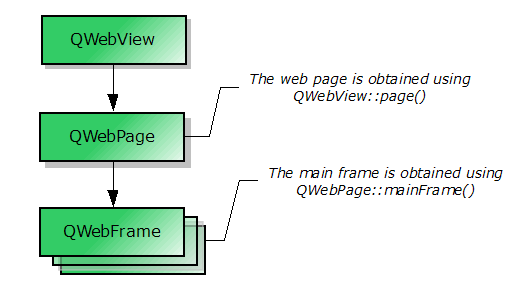

| Home · All Classes · Modules · QSS HELP · QSS 案例 · VER007 HOME |
该QWebView类提供了用于查看和编辑网页文件的小工具。More...
继承QWidget。
该QWebView类提供了用于查看和编辑网页文件的小工具。
QWebView是其中的主要组成部件QtWebKit网页浏览模块。它可以用在各种应用中显示从因特网web内容住。
一个网站可以被加载到QWebView与load（）函数。像所有的Qt部件，该show（）函数必须以显示QWebView被调用。下面的代码段说明了这一点：
QWebView *view = new QWebView(parent);
view->load(QUrl("http://qt-project.org"));
view->show();
另外，setUrl（）也可以被用于加载一个网站。如果您有HTML内容一应俱全，您可以使用setHtml（ ）来代替。
该loadStarted当视图开始加载（ ）信号被发射。该loadProgress（）信号，另一方面，是每当在网络视图中的一个元素完成加载，如嵌入图像，脚本等发出最后，该loadFinished（ ）信号，当视图已经完全加载发出。它的参数 - 无论是true or false - 表示加载成功或失败。
该page（ ）函数返回一个指向该网页的对象。看Elements of QWebView对于如何网页是有关意见之理由。修改你的web视图的设置，您可以访问QWebSettings与对象settings（）函数。同QWebSettings，你可以更改默认字体，启用或禁用功能，如JavaScript和插件。
一个HTML文件的标题可以用被访问title（）属性。此外，网站也可以使用指定一个图标，它可被访问的icon（）属性。如果标题或图标的变化，相应的titleChanged（）和iconChanged（）信号将被发射。该textSizeMultiplier（ ）属性可用于改变在网页视图中显示的文本的整体规模。
如果你需要一个自定义上下文菜单，你可以通过重新实现实现它contextMenuEvent()并填充你的QMenu从获得的操作pageAction（ ） 。更多的功能，例如重新加载视图，选定的文本复制到剪贴板，或者粘贴到视图，也封装内QAction通过返回的对象pageAction（ ） 。这些操作可以通过编程方式触发triggerPageAction（ ） 。可选地，操作可以被添加到工具栏或直接的菜单。 QWebView维护操作返回的状态，但允许的动作特性，例如修改text or icon。
一个QWebView可以打印到QPrinter使用print_（）函数。这个功能被标记为一个时隙，并且可以方便地连接到QPrintPreviewDialog的paintRequested()信号。
如果您想提供的网站，允许用户打开新的窗口，如弹出窗口的支持，你可以继承QWebView和重新实现createWindow（）函数。
QWebView包含其他对象，如QWebFrame和QWebPage。下面的流程图显示了这些元素之间的关系。

Note:它可以使用QWebPage和QWebFrame，不使用QWebView ，如果你不要求QWidget属性。尽管如此，QtWebKit取决于QtGui，所以你应该使用一个QApplication而不是QCoreApplication。
该parent的说法，如果不是没有，原因self通过Qt的，而不是PyQt的拥有。
构造一个空QWebView与父parent。
See also load（ ） 。
这种方法也是一个Qt槽与C + +的签名void back()。
便利插槽加载以前的文档中通过导航链接建立文件清单。什么都不做，如果没有以前的文档。
它相当于
view->page()->triggerPageAction(QWebPage.GoBack);
See also forward（）和pageAction（ ） 。
从重新实现QWidget.changeEvent（ ） 。
从重新实现QWidget.contextMenuEvent（ ） 。
这个功能是从CreateWindow的调用（相关的）方法QWebPage中，每当页想要创建的给定一个新的窗口type。这可能是一个JavaScript请求，在新窗口中打开的文档的结果，例如， 。
Note:如果相关的页面CreateWindow的（ ）方法被重新实现，这种方法不叫，除非重新实现显式地这样做。
Note:在该情况下，当窗口的创建是由JavaScript的触发，除了重新实现此方法的应用程序还必须设置的JavaScriptCanOpenWindows属性QWebSettings为True，以便它被调用。
See also QWebPage.createWindow（）和QWebPage.acceptNavigationRequest（ ） 。
从重新实现QWidget.dragEnterEvent（ ） 。
从重新实现QWidget.dragLeaveEvent（ ） 。
从重新实现QWidget.dragMoveEvent（ ） 。
从重新实现QWidget.dropEvent（ ） 。
从重新实现QObject.event（ ） 。
查找指定的字符串，subString在该页面中，使用给定的options。
如果HighlightAllOccurrences标志传递，函数将突出存在于页面中的所有事件。所有后续调用将延长的亮点，而不是取代它，以出现新的字符串。
如果HighlightAllOccurrences标志不通过，该函数将选择的发生，所有后续调用将取代目前出现的下一个。
要清除选择，只传递一个空字符串。
返回True如果subString结果发现，否则返回False 。
See also selectedText（）和selectionChanged（ ） 。
从重新实现QWidget.focusInEvent（ ） 。
从重新实现QWidget.focusNextPrevChild（ ） 。
从重新实现QWidget.focusOutEvent（ ） 。
这种方法也是一个Qt槽与C + +的签名void forward()。
便利插槽，加载下一个文档中通过导航链接建立文件清单。什么都不做，如果没有下一个文件。
它相当于
view->page()->triggerPageAction(QWebPage.GoForward);
See also back（）和pageAction（ ） 。
返回一个指针，指向的导航网页视图的历史。
它相当于
view->page()->history();
从重新实现QWidget.inputMethodEvent（ ） 。
从重新实现QWidget.inputMethodQuery（ ） 。
从重新实现QWidget.keyPressEvent（ ） 。
从重新实现QWidget.keyReleaseEvent（ ） 。
指定的负载url并显示它。
Note:该视图保持不变，直到足够的数据已经到达，以显示新url。
See also setUrl（ ）url（ ）urlChanged（）和QUrl.fromUserInput（ ） 。
加载一个网络请求，request使用中规定的方法operation。
body是可选的，并且仅用于POST操作。
Note:该视图保持不变，直到足够的数据已经到达，以显示新的URL。
See also url（）和urlChanged（ ） 。
从重新实现QWidget.mouseDoubleClickEvent（ ） 。
从重新实现QWidget.mouseMoveEvent（ ） 。
从重新实现QWidget.mousePressEvent（ ） 。
从重新实现QWidget.mouseReleaseEvent（ ） 。
返回一个指针，指向底层的网页。
See also setPage（ ） 。
返回一个指针，指向一个QAction封装指定网络行动action。
从重新实现QWidget.paintEvent（ ） 。
这种方法也是一个Qt槽与C + +的签名void print(QPrinter *) const。
打印主框架给定的printer。
See also QWebFrame.print（）和QPrintPreviewDialog。
这种方法也是一个Qt槽与C + +的签名void print(QPrinter *) const。
打印主框架给定的printer。
See also QWebFrame.print（）和QPrintPreviewDialog。
这种方法也是一个Qt槽与C + +的签名void reload()。
重新加载当前文档。
See also stop（ ）pageAction（）和loadStarted（ ） 。
从重新实现QWidget.resizeEvent（ ） 。
设置Web视图中的内容到指定的内容data。如果mimeType参数为空它是目前假设内容是HTML，但在未来的版本中，我们可能会引入自动检测。
在内容引用的外部对象的位置相对baseUrl。
该data立即加载;外部对象异步加载。
See also load（ ）setHtml（）和QWebFrame.toHtml（ ） 。
设置Web视图的内容的指定html。
外部对象，如样式表或HTML文档中引用的图片的位置相对于baseUrl。
该html立即加载;外部对象异步加载。
使用此方法时， WebKit的假定外部资源，例如JavaScript程序或样式表，除非另有规定被编码为UTF -8 。例如，外部脚本的编码可以通过HTML脚本标记的charset属性来指定。备选地，编码也可以由Web服务器指定。
这相当于一个方便的功能，使用setContent （ HTML ， “为text / html ” ， baseURL即可） 。
Warning:此功能仅用于HTML ，为其他MIME类型（即XHTML ， SVG ）setContent（ ）应该使用。
See also load（ ）setContent（ ）QWebFrame.toHtml（）和QWebFrame.setContent（ ） 。
品牌pageWeb视图的新网页。
父QObject该页面提供的仍然是对象的所有者。如果当前页面是Web视图的孩子，它会被删除。
See also page（ ） 。
If enabled诚然，启用指定的渲染hint否则禁用它。
此功能被引入Qt的4.6 。
See also renderHints和QPainter.renderHints（ ） 。
设置用于缩放网页中的文字乘数的值factor规定。
See also textSizeMultiplier（ ） 。
返回一个指针，指向视图/页面设置特定对象。
它相当于
view->page()->settings();
See also QWebSettings.globalSettings（ ） 。
从重新实现QWidget.sizeHint（ ） 。
这种方法也是一个Qt槽与C + +的签名void stop()。
便利插槽，停止加载该文件。
它相当于
view->page()->triggerPageAction(QWebPage.Stop);
See also reload（ ）pageAction（）和loadFinished（ ） 。
返回用于扩展在Web页面中的文本乘数的值。
See also setTextSizeMultiplier（ ） 。
触发指定的action。如果是指定了辨认的动作checked假定状态。
下面的例子将触发复制动作，所以副本中的任何选定的文本复制到剪贴板。
view->triggerAction(QWebPage.Copy);
See also pageAction（ ） 。
从重新实现QWidget.wheelEvent（ ） 。
这是该信号的默认超载。
这个信号时页面的图标被加载或改变被发射。
为了让图标加载，则需要使用设置一个图标数据库路径QWebSettings.setIconDatabasePath（ ） 。
See also icon（）和QWebSettings.setIconDatabasePath（ ） 。
这是该信号的默认超载。
每当用户点击一个链接这个信号被发射以及页面的linkDelegationPolicy属性设置为处理委讬给指定的链接url。
See also QWebPage.linkDelegationPolicy（ ） 。
这是该信号的默认超载。
当页面的加载完成时，这个信号被发射。ok将指示负载是否成功，或发生任何错误。
See also loadStarted（ ） 。
这是该信号的默认超载。
每个网页中的元素完成加载和整体加载进度前进时，这个信号被发射。
这个信号可以跟踪所有子帧的进展。
电流值是由所提供progress和秤从0到100 ，这是默认范围QProgressBar。
See also loadStarted（）和loadFinished（ ） 。
这是该信号的默认超载。
当开始页面的新负载，这个信号被发射。
See also loadProgress（）和loadFinished（ ） 。
这是该信号的默认超载。
这个信号被发射时的选择改变。
See also selectedText（ ） 。
这是该信号的默认超载。
这个信号被发射时，状态栏text由页改变。
这是该信号的默认超载。
这个信号被发射时的title的主框架的改变。
See also title（ ） 。
这是该信号的默认超载。
这个信号被发射时的url的观点变化。
| PyQt 4.10.3 for X11 | Copyright © Riverbank Computing Ltd and Nokia 2012 | Qt 4.8.5 |